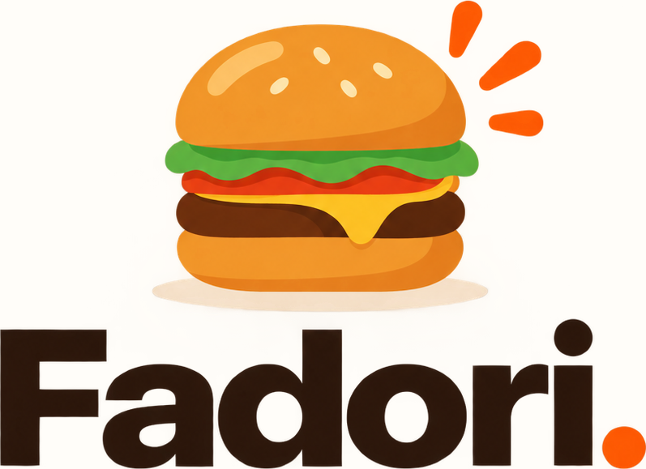
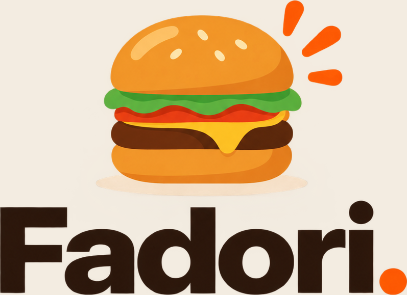

Cooperativa sin filas
¿Hambre?
¿Hambre?
Sáltate la fila.


- 1Escanea
- 2Pide desde aquí
- 3Recoge cuando salga tu turno
Tu turno sale en la pantalla y te avisa en el teléfono cuando está listo. Tú sigues en tu mesa.
Todo el menú con foto y precioSin gritar tu ordenSin hacer fila
FADORI · COOPERATIVA DEL INSTITUTO REMBRANDT

Pide desde tu mesa.
Cero fila.
El menú completo en tu teléfono.
Apunta tu cámara aquí
- 1Escanea
- 2Elige y pide
- 3Te avisamos
FADORI · COOPERATIVA DEL INSTITUTO REMBRANDT